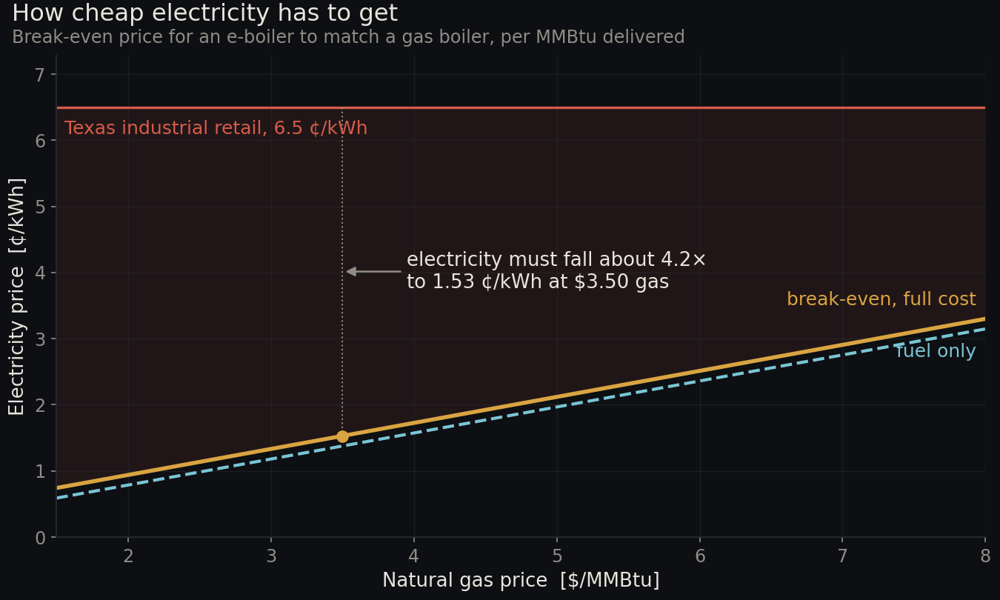
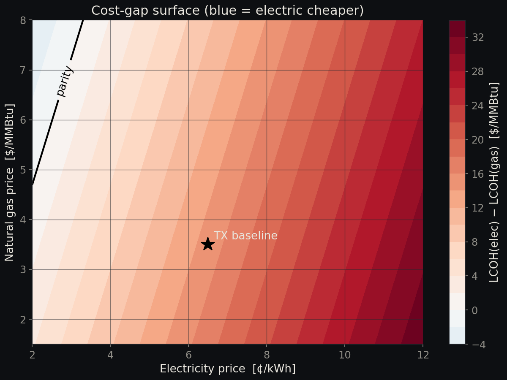
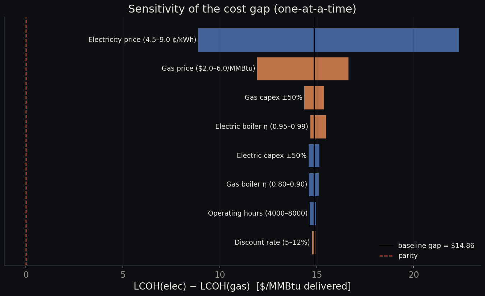
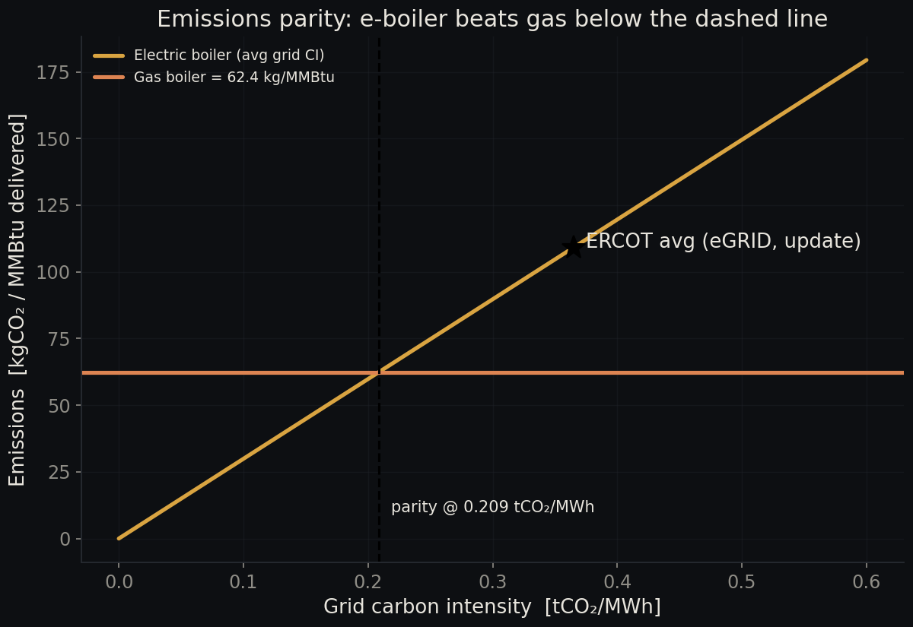

Industrial heat electrification break-even
Levelised cost of heat from a resistive electric boiler against a natural-gas boiler, for process steam in Texas.
A chemical plant that wants to stop burning gas for process steam has one obvious substitute, and it is almost insultingly simple: put an electric resistance heater where the burner was. No new chemistry, no new catalyst, nothing to invent. The whole question is arithmetic — what does the electricity have to cost before the substitution stops losing money?
The answer is delivered heat, not fuel bought, so both routes are compared in dollars per million British thermal units that actually reach the process.
What the model finds
At a gas price of $3.50 per million British thermal units and electricity at 6.5 cents per kilowatt hour, gas heat costs about $5.13 per million British thermal units and electric heat about $20.00. The break-even electricity price is about 1.53 cents per kilowatt hour, or 1.38 cents if only fuel is counted.
The result that matters is not the number itself but its insensitivity. Moving capital cost and fixed operations across a range of plus or minus fifty per cent shifts the break-even by roughly 0.15 cents per kilowatt hour. The spark gap, meaning the ratio between the electricity price and the gas price, decides the outcome almost by itself. Arguments about equipment cost are therefore arguments about the wrong variable.
Emissions follow the same logic and give a second threshold. The electric boiler only emits less than the gas boiler when the grid carbon intensity is at or below 0.209 tonnes of carbon dioxide per megawatt hour. The eGRID average for the Texas grid is about 0.365. On average grid power, in other words, electrifying this heat increases emissions.

Break-even electricity price as a function of the gas price. The line is the locus where the two routes cost the same; below it the electric boiler wins.

Cost gap across the electricity price and gas price plane. The diagonal structure is the spark gap dominating both axes.

Sensitivity of the break-even to every input. Fuel prices dominate; capital and operations barely move it.

Emissions of both routes against grid carbon intensity. The crossing point is the parity threshold.
Method
The levelised cost is built from an annualised capital charge, fixed and variable operations, and fuel, divided by annual delivered heat. Boiler efficiency is applied on the gas side and conversion and distribution losses on the electric side. The workbook carries the same arithmetic in live formulas so that the assumptions can be edited without touching code, and the Python implementation is the reference the other ports were checked against.
Limits
The prices in the shipped run are placeholders, and the model reads a real series from a template file the moment one is supplied. The boundary between retail all-in electricity and wholesale energy-only pricing has to be stated before any number is quoted, because it moves the answer by more than the capital cost does. Capital figures are scaling placeholders with a stated uncertainty band rather than vendor quotes. The emissions comparison uses average grid intensity; a marginal-emissions treatment is the more defensible framing and is the next revision.
The code
Python reference implementation, Julia and Octave ports, and the formula-driven workbook. The archive holds the source only: no generated figures, no bulk
data. Each model runs from its own README.md.